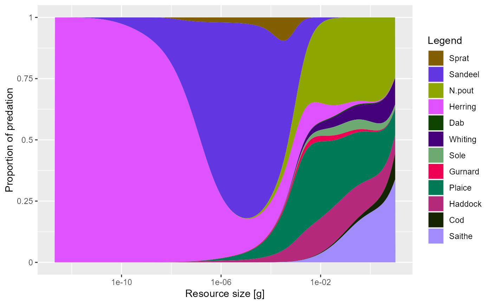

Plot the mortality applied on the resource spectrum(s)
Usage
plotResourcePred(object, proportion = TRUE, return_data = FALSE)
plotlyResourcePred(object, proportion = TRUE, ...)Arguments
- object
An object of class MizerSim or MizerParams.
- proportion
A boolean value that determines whether values should be displayed as proportions from 0 to 1 or with their actual values. Default is TRUE.
- return_data
A boolean value that determines whether the formatted data used for the plot is returned instead of the plot itself. Default value is FALSE
- ...
Other arguments (currently unused)
Value
A ggplot2 object, unless return_data = TRUE, in which case a data
frame with the four variables 'w', 'value', 'Predator', 'Resource' is
returned.
See also
plotting_functions
Other plotting functions:
plotDeath(),
plotEnergyBudget(),
plotResourceLevel(),
plotYieldVsF(),
plotYieldVsSize()
Examples
# \donttest{
plotResourcePred(NS_params)

# Returning the data frame
fr <- plotResourcePred(NS_params, return_data = TRUE)
str(fr)
#> 'data.frame': 2148 obs. of 3 variables:
#> $ w : num 2.12e-13 2.12e-13 2.12e-13 2.12e-13 2.12e-13 ...
#> $ value : num 7.00e-12 5.07e-05 8.17e-11 1.00 8.69e-13 ...
#> $ Predator: Factor w/ 12 levels "Sprat","Sandeel",..: 1 2 3 4 5 6 7 8 9 10 ...
# }